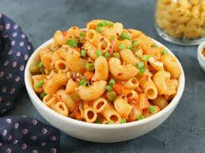

Macoroni Recipe

Macaroni is a type of short, curved pasta shaped like tiny hollow tubes. It’s one of the most popular pasta shapes because it’s simple, versatile, and perfect at catching sauces inside and around its curves.
Originally from Italy, macaroni is usually made from durum wheat and water, giving it a firm bite (al dente) when cooked right. Its classic form is the elbow shape, which makes it iconic in dishes like mac & cheese, pasta salads, and baked casseroles. Because of its hollow center, it holds onto creamy, cheesy, or even tangy tomato sauces super well.
In short: macaroni is the ultimate pasta comfort shape—tiny, chewy, and built to deliver maximum flavor in every bite.
Ingredients
- 2 cups (200 g) elbow macaroni
- 4 cups (1 L) water
- 1 tsp salt
- 2 tbsp butter
- 2 tbsp all-purpose flour
- 2 cups (500 ml) milk (warm)
- 1½ cups (150 g) shredded cheese (cheddar is classic)
- ½ tsp black pepper
- ¼ tsp chili flakes or paprika (optional)
- Extra salt to taste
Step By Step Guide
- Boil pasta
- In a pot, bring 4 cups water + 1 tsp salt to a boil.
- Add macaroni and cook 7–8 minutes until al dente (soft but with a slight bite).
- Drain, toss with a little butter/oil so it doesn’t stick. Set aside.
- Make the roux (base sauce)
- In the same pot, melt 2 tbsp butter on medium heat.
- Add 2 tbsp flour, whisk for 1–2 minutes (it’ll look like a paste). This gets rid of the raw flour taste.
- Build the cheese sauce
- Slowly pour in warm milk, whisking constantly to avoid lumps.
- Cook 3–4 minutes until it thickens slightly (coats the back of a spoon).
- Stir in cheese, pepper, paprika/chili flakes. Mix until smooth and creamy.
- Combine
- Add the cooked macaroni into the cheese sauce.
- Stir well so every piece is coated. Taste and adjust salt if needed.
- Serve (or bake for extra flair)
- Eat as-is for stovetop mac & cheese.
- Optional: Transfer to a baking dish, top with breadcrumbs + extra cheese, and bake at 200°C (400°F) for 15 minutes until golden + crispy.
Home